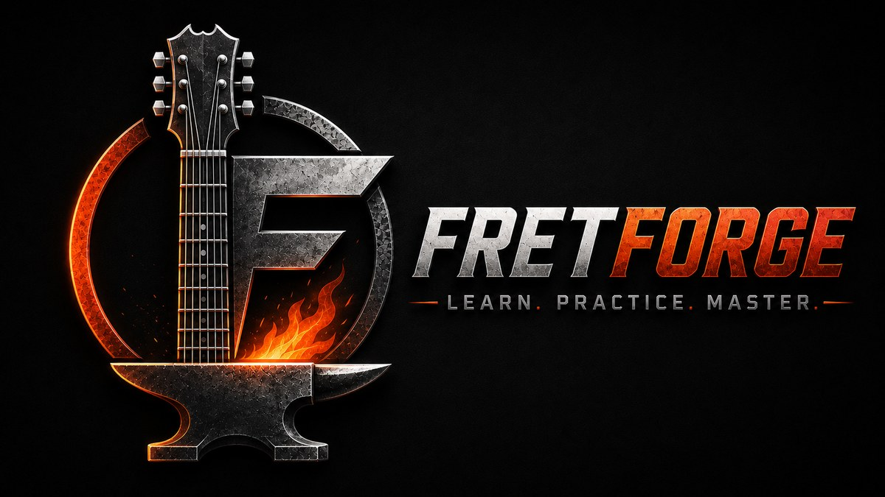
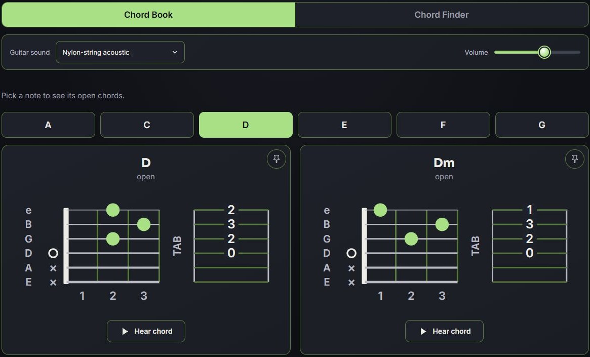
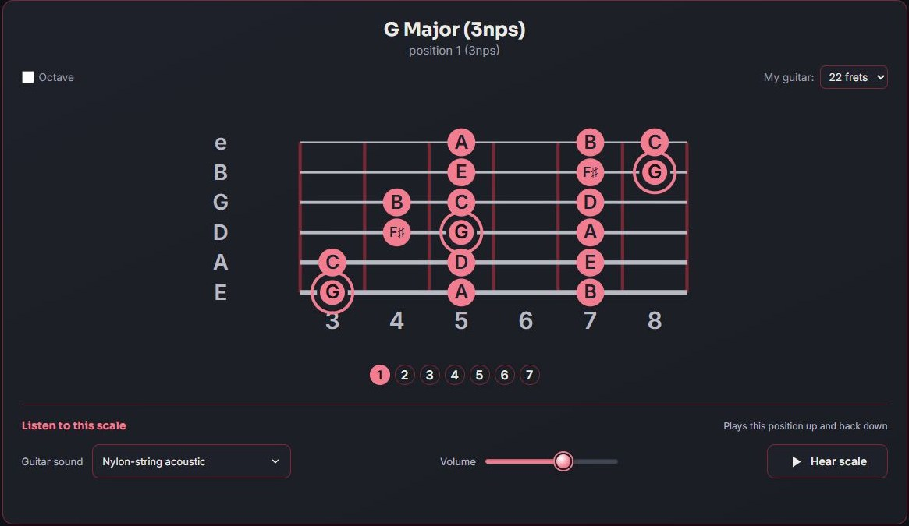
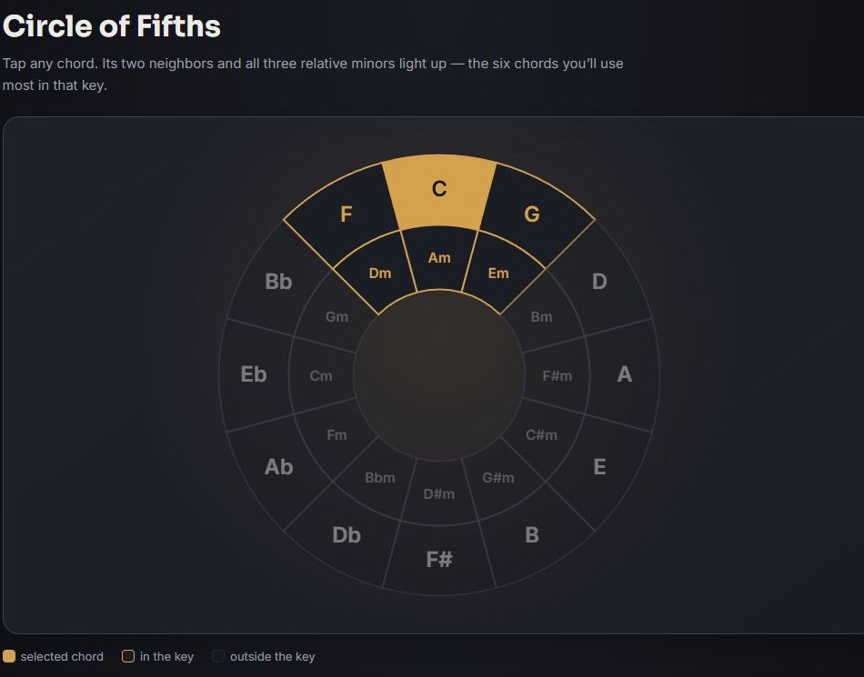

Guitar campaigns
Organise your learning across six campaigns, from Beginner to Master Guitarist, with chapters and progress tracking.

FRETFORGE BY MINNYMEDIA
Bring structure to your playing with guitar campaigns, clear chord and scale references, listening exercises, and rhythm tools.
In development · See the current working build below
LEARN IT. HEAR IT. PLAY IT.
Follow your learning path, explore a musical idea, or spend a few minutes sharpening one skill.
Organise your learning across six campaigns, from Beginner to Master Guitarist, with chapters and progress tracking.
Explore chord families, diagrams and tablature. Hear the notes and a strum, identify fingerings, and pin chords for reference.
Build from single-octave shapes to pentatonic, blues, CAGED and three-notes-per-string positions, with audio previews.
Practise pitch, intervals, short melodies and major/minor chords through guided lessons, a practice room and untimed quizzes.
Explore major and minor keys, related chords, and progression examples across pop, blues, jazz and more.
Set tempo, time signature, subdivisions and accents. Choose a click, sampled drums, a hi-hat track or a basic drum groove.
A LOOK INSIDE
Genuine screenshots captured from the current FretForge development build. Select any image to view it larger.

Campaigns give your practice a sense of direction.

Connect the fingering, the tab and the sound.

Explore scale positions with labelled notes and playback.

Listen, compare and learn at your own pace.

See how keys and chords connect.

Shape the beat to suit the music you are practising.
Screenshots are cropped for clarity. Features and appearance may change during development.
DEVELOPER & SUPPORT
Questions about FretForge or need support? Get in touch with the developer.